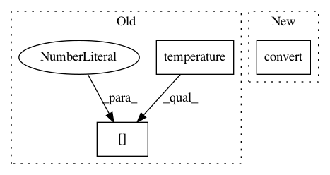

e15eb90b33c228e6ca8ec8aafa4cdc0c63f2dc04,homeassistant/components/thermostat/__init__.py,ThermostatDevice,state_attributes,#ThermostatDevice#,119
Before Change
def state_attributes(self):
Returns optional state attributes.
data = {
ATTR_CURRENT_TEMPERATURE: self.hass.config.temperature(
self.current_temperature, self.unit_of_measurement)[0]
}
is_away = self.is_away_mode_on
After Change
user_unit = self.hass.config.temperature_unit
data = {
ATTR_CURRENT_TEMPERATURE: round(convert(self.current_temperature,
thermostat_unit,
user_unit), 1),
ATTR_MIN_TEMP: round(convert(self.min_temp,
thermostat_unit,
user_unit), 0),
In pattern: SUPERPATTERN
Frequency: 3
Non-data size: 3
Instances
Project Name: home-assistant/home-assistant
Commit Name: e15eb90b33c228e6ca8ec8aafa4cdc0c63f2dc04
Time: 2015-08-25
Author: Zyell@users.noreply.github.com
File Name: homeassistant/components/thermostat/__init__.py
Class Name: ThermostatDevice
Method Name: state_attributes
Project Name: home-assistant/home-assistant
Commit Name: e15eb90b33c228e6ca8ec8aafa4cdc0c63f2dc04
Time: 2015-08-25
Author: Zyell@users.noreply.github.com
File Name: homeassistant/components/thermostat/__init__.py
Class Name: ThermostatDevice
Method Name: max_temp
Project Name: home-assistant/home-assistant
Commit Name: e15eb90b33c228e6ca8ec8aafa4cdc0c63f2dc04
Time: 2015-08-25
Author: Zyell@users.noreply.github.com
File Name: homeassistant/components/thermostat/__init__.py
Class Name: ThermostatDevice
Method Name: min_temp